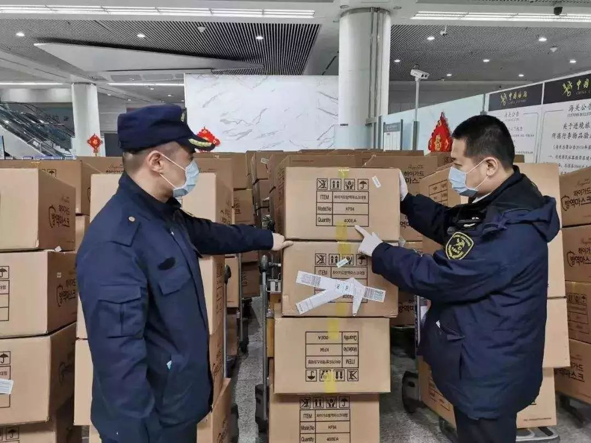

黄晓明、林志玲捐的扶贫基金会赠170万口罩？供货商称：不做口罩，从未卖口罩给基金会
原文链接 备份链接 出品|网易清流工作室 作者|刘亚丹 主编|赵妍 爆料邮箱： stoolpigeon@service.netease.com 没有购销N95资质的口罩供应商，出现在一家基金会供货合同中。不是口罩生产商，曾因医疗器械违规被 …
以下文章来源于网易财经 ，作者梁耀丹



出品|网易清流工作室
作者|梁耀丹 主编|赵妍
爆料邮箱：
stoolpigeon@service.netease.com
假口罩在市场上蔓延。
多位试图通过实体药店、电商平台、微商购买口罩的消费者，在疫情面前，却不约而同地买到了假口罩。这些口罩中，有是伪造的3M，有的是被正版厂家“声明为假”的版本，有的是生产日期出现“穿越”的口罩。
值得警惕的是，与此同时，这些假口罩还流入了捐赠给正处疫情一线的湖北医院的物资中。至少三个向湖北医院捐赠物资的募捐团队向清流工作室表示，其在筹备物资过程中碰到了提供假冒口罩的商家。其中一个团队把买到的口罩捐赠给医院后，却收到医院反馈称，这些口罩是“三无产品”。
四处泛滥的假口罩背后，存在着一条隐秘的口罩产业链。
清流工作室发现，在批发平台上，多家厂家号称可以提供贴牌代工服务，“logo”等标志可以定制。一家没有生产医用口罩资质的工厂告知清流工作室，他们可以生产医用的N95口罩。然而，在严峻的疫情面前，一些已被证实售卖假口罩的工厂，现阶段产品也已经全部售空。这意味着，大量假口罩已经流入市场。
肆虐蔓延的假口罩
一周前，李丽在微信群加了一个号称卖3M口罩的微商，花了1800块下单了150个9001型号口罩。收到口罩时，她马上就后悔了。经跟3M正版口罩比对，9001型号的口罩本该是KN90口罩，而她收到的口罩包装上却全部都打了“KN95”的标识。她找到微商，微商承认了售假，并求她不要把自己举报出去。目前，清流工作室以购买口罩的名义加了这位微商的微信，发现她仍在售卖3M口罩。微商向清流工作室表示，由于口罩紧缺，目前向她下单只能每天买几个。
陈舟也买到了假的3M口罩。她在一家名为“鸣连居家日用专营店”的淘宝店花178元买了25个3M口罩。收到货时，她在3M的公众号上查了一下防伪码，发现全是假的。目前，清流工作室在这家淘宝店看到，“宝贝分类”一栏还显示着3M口罩的图片，但店里已经找不到口罩商品的链接了。
无独有偶，在淘宝店“盈顺医疗器械专营店”上，赵鹏也买到了假的一次性医用口罩。他收到货物是1月27号，让他哭笑不得的是，口罩包装打上的生产日期却显示是2月6日。目前，“盈顺医疗器械专营店”上的口罩产品已经下架。该淘宝店客服告诉清流工作室，店里口罩已经卖完。
假口罩也出现在实体药店之中。家在安徽淮南的吴玮在老家的一间药店买到了假冒的“飘安牌”口罩。不久后，他通过河南飘安集团对外声明的新闻，才发现正版的“飘安牌”口罩根本没有他所买到的包装。吴玮的经历并非孤例，多位安徽网友均向清流工作室表示，他们在实体药店不约而同地买到了假的“飘安牌”口罩。令其中一位消费者气愤的是，在药店里，“假飘安”竟然也抬高价格售出。
更值得警惕的是，一些正在为疫情前线的湖北医院筹备物资的募捐团队，也遇到了售假口罩商家。一些被送到医院的口罩，被发现是“三无产品”。
马崇道的募捐团队组建于1月25日，刚成立便紧急筹备一批医用防护物资，用以捐赠给湖北疫区的医院。次日凌晨，团队成员紧急联系上一位号称做外贸进出口的口罩批发商，对方声称有医用口罩可以提供。成员收到批发商发来的口罩货品图片，发到团队的微信群让群友甄别。不料，一位有医护背景的成员一眼就判断出，口罩不符合医用标准。
“这个事情我越想越害怕。”马崇道向清流工作室表示，批发商曾告知他们，说这批口罩绝无问题，说很多人买来就是发武汉的。由于批发商朋友圈的视频定位在义乌，事发后他立即向当地公安局进行了举报。
类似的问题也困扰着一位不愿意具名的公益人士所在的募捐团队。她向清流工作室表示，此前募捐团队所在的微信群中，一个号称自己有口罩货源的群成员发了货物图片后，被一位黄冈某医院的采购人员质疑了口罩的真实性。
这位公益人士告诉清流工作室，即便疫区出现物资紧缺的医院公开了具体的型号或标准，但市场上符合标准的口罩产品基本已经卖完，团队成员难以判断目前所能接触到的口罩是否符合要求。此外，正规厂家基本已经没货，志愿者能联系上的厂家鱼龙混杂，而大部分商家要求先付款再发货，存在很大的风险。
一个名为“武汉加油·北美留学生组”的募捐团队则买到了假口罩。1月25日，该团队向一名许姓口罩商家采购了价值27.5万的5万只KN95-K310口罩，直接发往武汉多家医院。然而，在口罩送达的一天后，多家医院却向募捐团队反馈，口罩不仅不是N95口罩，而且也不符合厂家提供的质检报告中所提到的N09口罩的质量标准，属于三无产品。该募捐团队的成员向清流工作室表示，事发后团队已经报警。
值得一提的是，“武汉加油·北美留学生组”买到的这批假口罩，厂家为广州市威尼科技发展有限公司。1月29日，清流工作室以购买口罩的名义联系到这家该公司时，该公司相关负责人告知，厂里的口罩已经全部卖完，而且一段时间内将不再接受订单。
这意味着，或许已有大量的假口罩流入市场。
隐秘的产业链
泛滥成灾的假口罩背后，隐藏着一条鲜为人知的假口罩产业链。
清流工作室在阿里巴巴、百度爱采购等批发平台上看到，有多家显示为工厂直销的商家，号称提供定制logo、文案和包装等各类口罩。其中，一些厂家登出招微商代理的广告。
其中，至少两家口罩厂家未见其展示3M的授权证书，而清流工作室以进货的名义咨询其是否能定制代工3M时，得到的答复是“可以”。清流工作室未能联系上3M中国公司对这些厂家的资质做进一步的核实。
至少两位3M公司经销商对清流工作室表示，他们所能接触到的3M公司的授权厂商均已经没有货源，他们也一筹莫展。其中一位经销商告诉清流工作室，在疫情期间，3M公司的口罩库存资源优先调配至武汉及湖北各地，市场上基本很难买到正版3M口罩。
3M不是唯一被山寨的口罩品牌。如前文所述，多位消费者向清流工作室表示，近日在市场上买到了假冒的“飘安牌”口罩。目前，飘安控股河南有限公司已披露了辨别真伪的方法，并发布声明称该公司防护产品主要按保武汉、保湖北、保河南等医疗机构的顺序供应。
清流工作室在调查中还发现，一些没有生产医疗器械或医用口罩资质的厂家，却号称自己可以提供医用口罩。
一家名为“苏州金瑞达防护用品有限公司”厂家对清流工作室表示，其可生产医用N95口罩。不过，工商信息显示，这家公司的经营范围为“特种劳动防护用品制造、加工、销售；针纺织品及原料、劳保用品、塑料制品、金属材料及制品购销”等，却未包括“医用口罩”。
类似地，前述生产伪冒医用口罩给募捐团队的广州市威尼科技发展有限公司，经营范围为“普通劳动防护用品制造；劳动防护用品批发；劳动防护用品零售”等，同样未包括经营生产医疗器械及口罩。
与此同时，有人回收二手口罩的传言也刺激着公众的神经。
1月24日，有网友发布视频，称马鞍山市花鸟市场附近一家劳保用品店收集废旧口罩装箱，疑似回收口罩进行二次销售。1月26日，马鞍山市公安局发布通报称，被查扣的口罩是涉事商店从推销员或本市工厂职工收购的劳保类口罩，因管理不善部分口罩包装损坏，并非二手口罩。
据新华社报道，深圳市市场监督局副局长李忠在发布会上通报一起深圳市打击销售假冒口罩案件。近日有顾客反映深圳位于松岗街道东方工业二路的瑞草堂药店购买到有明显黑色污渍的二手口罩，该店售卖的号称为N95的口罩售价达18元一个。执法人员接报后马上进行现场查处，并查获一批没有任何标签、标识、厂名、厂址，却标称N95涉嫌假冒伪劣的口罩700多个。通过后续调查发现，这家药店已经卖出1800个这样的“N95口罩”，还有24000个号称是高过滤卫生口罩。
清流工作室注意到，截至目前，“回收或售卖二手口罩”的传言未有被证实的案例。有人曾在网上发布“高价收购3M口罩”等信息，不过，当清流工作室联系上至少4位从事收购3M口罩的人士时，均被告知其收购的是全新的、未用过的3M口罩。其中，一位长期收购3M口罩的人士告诉清流工作室，其一般收购的是公司发给工人们的、用不完的劳防用品，业内很少听过有人收购用过的二手口罩。
口罩市场乱象已久
事实上，公开信息显示，早在疫情之前，口罩市场便乱象丛生。
清流工作室在裁判文书网上找到了多则与侵害3M公司商标权、非法制造及销售3M产品有关的案件。
其中，一则判决于2016年3月裁判文书显示，2012年8月至2013年5月间，被告林某某通过淘宝网从广东东莞的周某某开的“周氏家族518”购进假冒“3M”品牌的口罩及配件，利用其在淘宝网上开设的“尚青劳保用品批发商行”和“本店只做劳保用品批发”二家网店进行销售，累计销售金额达人民币12万元。
另一则判决于2019年1月的裁判文书显示，2016年8月至2017年12月，被告人赵某在未取得3M注册商标所有人许可的情况下，在高密市柏城镇小河崖村厂房内生产假冒的3M注册商标口罩。2016年9月至2017年12月，其将生产的假冒3M注册商标口罩，及其购买的假冒3M3701CN口罩滤棉，加外包装盒后出售给赵某某、冷某，销售金额13.8万元。2016年，被告人张某在明知被告人赵某生产假冒注册商标3M口罩的情况下，为被告人赵某制作带有3M9001、3M9002、3M9001V、3M9002V字样的印花模版六块。被告人赵某某和冷某在明知是假冒3M的情况下，从赵某处购买了假冒3M产品，后全部销售。
判决于2019年8月的一则裁判文书则显示，2013年至2014年间，被告人肖某某未经3M公司许可，非法生产假冒注册商标“3M”口罩94800只，后因口罩质量不过关，便将该批口罩存放于租用的福建省龙海市颜厝镇宅前村郑某家铁皮仓库。2016年6月27日，被告人肖某某通过中间人将该批口罩（10000元）以及生产口罩机器（61200元）销售给汪某。2016年10月，3M中国公司向桐城市公安局报案，称桐城市有数家生产假冒3M牌口罩窝点。当日，桐城市经侦大队会同桐城市市场监督管理局对桐城市雅格卫生材料有限公司进行检查，现场查获大量假冒3M口罩成品及半成品。
一位3M经销商告诉清流工作室，判断3M口罩真假，主要看包装上的标签是否反光为天蓝色，以及看包装和纸盒是否字迹清晰，是否有保质期和生产日期在包装的底部或顶部。清流工作室亦注意到，目前，3M已经在官网公布了产品防伪的方法。
业内人士向清流工作室表示，消费者如要判断购买的医用口罩真伪，可以在国家药品监督管理局官网通过查询企业的生产信息、批准文号，查询口罩的详细信息。
一位不愿具名的医生向清流工作室表示，N95口罩过滤效率达到95%，如果口罩质量不好或者重复使用口罩会使过滤效率降低。但她强调，除非是口罩上有病毒，在目前的情况下，即便是假口罩，戴上也比不戴上好。
（文中李丽、陈舟、赵鹏、吴玮为化名）
梁耀丹为清流工作室高级作者，常驻广州。
往期精彩回顾
清流|莆田系医院获赠1.8万口罩背后: 与湖北红会7年间合作7次
黄晓明、林志玲捐的扶贫基金会赠170万口罩？供货商称：不做口罩，从未卖口罩给基金会
湖北脑瘫儿之死：多方曾介入救助 父亲被隔离时想带其入院
清流|华南海鲜市场余氏家族财富增长史：神秘商人如影相随 与武汉国资有交集

原文链接 备份链接 出品|网易清流工作室 作者|刘亚丹 主编|赵妍 爆料邮箱： stoolpigeon@service.netease.com 没有购销N95资质的口罩供应商，出现在一家基金会供货合同中。不是口罩生产商，曾因医疗器械违规被 …
原文链接 备份链接 作者 | 王卓铭 编辑 | 张庆宁 出品 | 棱镜·腾讯小满工作室 欢迎下载腾讯新闻APP，阅读更多优质资讯 1月31日21:00，湖北省新型肺炎防控指挥部召开第九场新闻发布会。 武汉市委副书记、市长周先旺表示：“到 …
原文链接 备份链接 出品|网易清流工作室 作者|梁耀丹 主编|赵妍 爆料邮箱： stoolpigeon@service.netease.com “莆田系医院”武汉仁爱医院获赠来自湖北省红十字会1.8万个口罩的消息，掀起舆论轩然大波。 …
原文链接 备份链接 31.01.2020本文字数：1420，阅读时长大约2分钟 导读：医院现在依然是防护物资紧缺，特别是一些普通科（病）室。 作者 | 第一财经 吴绵强 “最近科室有确诊（新型冠状病毒感染的肺炎）的病例了，我们才开始穿防 …
原文链接 备份链接 在疫情防控的持续压力下，口罩的供给，尤其是防疫一线的供给情况依然紧绷。这背后既有制约企业生产的原料问题，民众也存在过度追求N95等专业口罩的误区，更有人借机囤积居奇，乃至造假售假。 全文3748字，阅读约需5.5 …